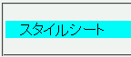

画像を読み込まない設定にしている状態では、要素に指定した背景画像は読み込まれないが、これと同時に背景色の指定も無視されてしまう。また、存在しない画像ファイルを背景に指定した場合にも同様の現象が発生する。
<p style="background:url('img00.png') aqua;">スタイルシート</p>
スタイルシート
「img00.png」は存在しない画像ファイルです。従って背景色の指定だけが反映されるはずです。
N7.02での表示
NN4.8での表示
背景色の指定がまったく反映されないわけではなく、ボックスの左上部だけは背景色が反映されるようです。しかし、そこを除く大部分は親要素と同じ背景になってしまうのでcolorプロパティの指定次第では内容物が見づらくなる可能性があります。
過去に当該画像を読み込んでいる（画像ファイルがキャッシュに入っている）状態では、画像を読み込まない設定のもとでも問題は発生しません。
NN4.8で不具合の発生を確認しました。